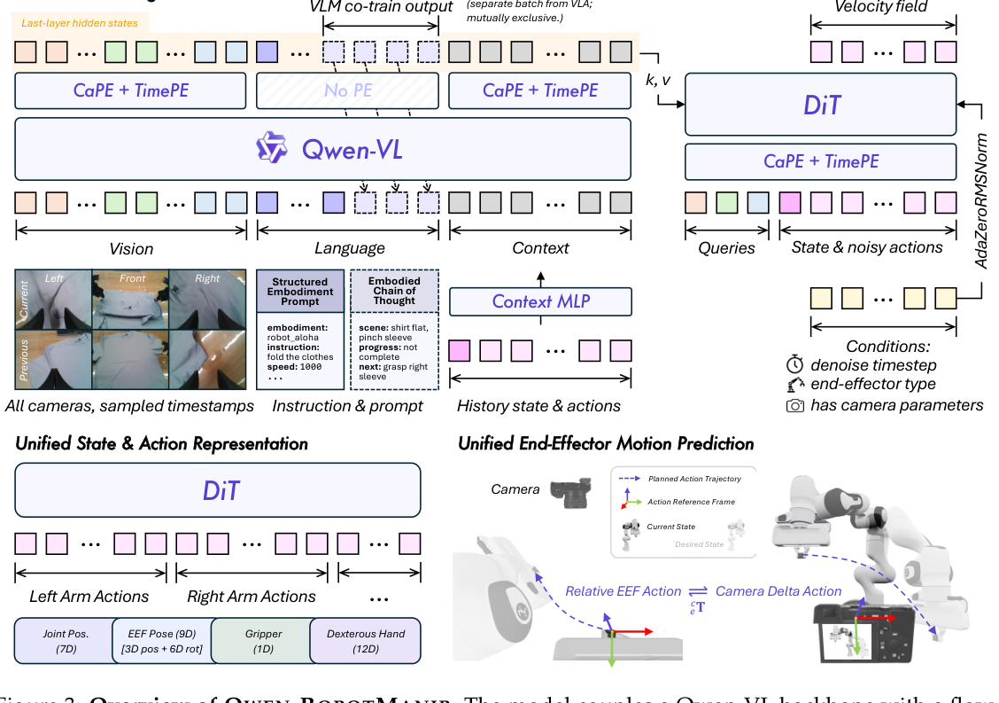
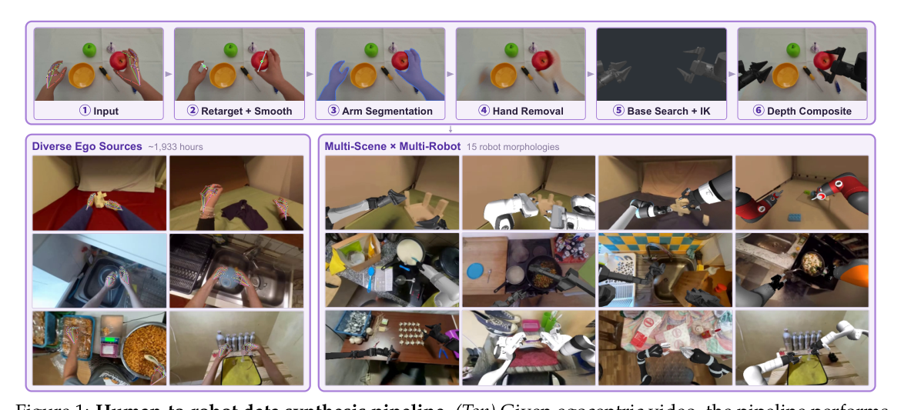
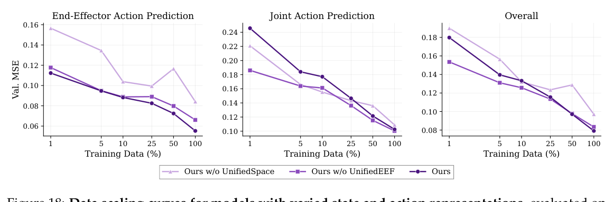
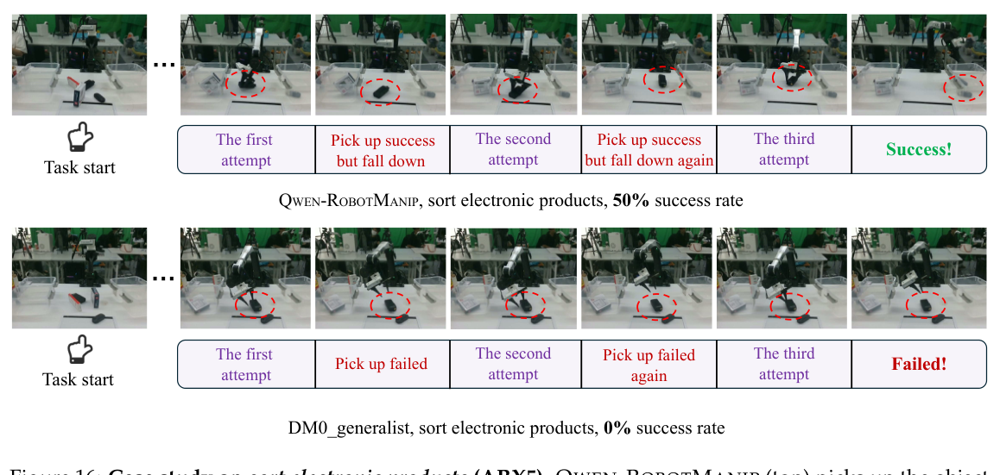

- 一句话：论文不是简单说“数据越多越好”，而是证明机器人数据只有先在语义和几何上对齐，规模才会转化为泛化。
- 三层对齐：80D canonical vector 统一形状；camera-frame delta EEF 统一物理运动；in-context history 适配具体本体的行为节奏。
- 规模：11,420 小时机器人数据、1,933 小时人类第一视角视频、24,808 小时 Human-to-Robot 合成数据，总计约 38,100 小时。
- 机制证据：相机坐标 EEF 在 RoboTwin-C2R EEF 控制上达到 72.5/56.6，去掉 UnifiedEEF 只有 49.0/33.0；混合后训练若没有 UnifiedEEF 甚至降到 0。
- 可用性：论文、博客与信息仓库公开；官方 README 明确表示当前没有发布模型权重的计划。

原文 caption
Figure 3: Overview of QWEN-ROBOTMANIP. The model couples a Qwen-VL backbone with a flow-matching Diffusion Transformer action head... States and actions share a unified 80-dimensional canonical representation.
论文主张VLA 的 scaling law 不是由数据量单独触发，而由“alignment × scale”共同触发。Qwen-RobotManip 以 Qwen3.5-4B 为骨干、10 层 DiT 为动作专家，把多本体数据映射到同一个 80D 模板，并把 EEF 增量变换到观察它的相机坐标系。配合人手到机器人合成、严格清洗和 VL co-training，模型在多个 OOD benchmark 与真实机器人上优于报告中的基线。
我的解读最重要的贡献不是又一个大 VLA，而是把 data process 提升成模型能力的前置条件：数据清洗、坐标校准、TCP/EEF 定义、缺失维 mask 和评测协议共同决定规模是否有效。
1. 问题与动机
语言里的 token “打开”在不同网页上仍大致同义；机器人数据中的“向前 5 cm”却可能分别写成 base-frame 位移、EEF-local 位移、joint target，甚至记录的是 flange 而非 TCP。直接混合会产生互相矛盾的监督。
像把英里、公里、经纬度和“向左两个街区”混进同一列，却不给单位。增加样本不会自动让回归更准，第一步必须是转换到共享坐标和共享语义。
具体 gap：shared architecture、embodiment token 或统一 tokenization 能容纳多机器人数据，但未保证同一物理运动数值接近。数据越杂，gradient interference 越强；IID benchmark 又可能用场景记忆掩盖它。
2. 相关工作与发展脉络
Open X-Embodiment 证明多来源机器人数据可以汇集；Octo、OpenVLA、RDT、GR00T 与 $\pi_0/\pi_{0.5}$ 推动 generalist policy，但通常用本体 token、per-embodiment head、padding 或粗粒度 EEF 对齐处理异构性。Camera-space action 进一步提供视觉坐标中的共同几何语义。Qwen-RobotManip 将这些线索组合成表示、运动、行为三层对齐，并把数据合成、清洗和 OOD evaluation 纳入同一个 recipe。
时间线表示技术演进，不暗示未被原文支持的直接因果关系。
3. 方法总览
输入是多视角图像、指令、结构化 embodiment prompt、当前 proprioception，以及可选历史 observation-state-action chunks。Qwen-VL 理解视觉与语言；DiT 读取 VLM 最后一层 hidden states、当前 state 与 noisy action，预测 flow velocity，积分得到动作 chunk。
数据先经过 Human-to-Robot 合成和多阶段清洗，再编码为 canonical vector。有相机标定时 EEF action 使用 camera-frame delta；没有时由 auxiliary flag 切到 robot-base relative mode。VLA batch 与 VL batch 以 9:1 比例互斥采样，避免动作微调抹掉语言与视觉能力。
4. 符号表
| 符号 | 含义 | 维度/域 |
|---|---|---|
| $a$ | ground-truth action chunk | $\mathbb{R}^{T\times D}$，canonical $D=80$ |
| $s,o$ | state 与视觉语言 observation | 按本体变化 |
| $\epsilon$ | 高斯噪声 | $\mathcal N(0,I)$ |
| $t$ | flow 时间 | $\mathrm{Beta}(1,1.5)$ |
| $m$ | 有效监督 mask | $\{0,1\}^{T\times D}$ |
| ${}^{c}R_e$ | EEF frame 到 camera frame 的旋转 | $SO(3)$ |
| ${}^{e}t_{e^*}$ | 当前到目标 EEF 的平移 | $\mathbb{R}^3$ |
| $C$ | 历史 context token 序列 | $\mathbb{R}^{H(1+K')\times D_{vlm}}$ |
5. 方法详解
5.1 数据规模来自“转换”
Human-to-Robot 同时把人手轨迹 retarget 到机器人动作，并把视频里的人手移除后合成机器人外观。1,933 小时人类视频被渲染到 15 种机器人形态，扩展成 24,808 小时。

原文 caption
Figure 1: Human-to-robot data synthesis pipeline... approximately 1,933h of egocentric data is rendered across 15 robot morphologies, yielding approximately 24,808h.
清洗有五个 state-action 阶段：突变、trend alignment、极值、FK consistency、base-frame/orientation alignment；再加 instruction、video-state、video quality 三类跨模态检查。RoboMIND UR-type 中 81% episode 未通过 directional agreement 并被剔除。
5.2 80D canonical vector
每臂 29D：7D joint、9D EEF pose（3D position + 6D rotation）、1D gripper、12D dexterous hand；两臂 58D，另留 22D。state 为绝对量；joint action 为绝对量；EEF action 为相对增量，旋转增量用 3D rotation vector。
- 是什么
- 屏蔽本体不存在的维度、异常/越界时间步，以及人手离开画面后的轨迹。
- 为什么
- zero padding 只统一 shape；mask 才能防止模型把“不存在的关节=0”当成真实目标。
- 细节
- 每个 sample 按有效 entry 数归一化，避免自由度多的本体主导 gradient。
5.3 Camera-frame delta EEF
若相机里末端都向右移动，base frame 可能因机器人朝向不同而记成不同向量。把相对 motion 旋转进相机坐标后，“画面中的右”成为共享语义。
- 是什么
- 论文式 (5)。旋转通过 conjugation 表达到 camera frame，平移由 ${}^{c}R_e$ 投影。
- 逐符号
- $e$ 为当前末端，$e^*$ 为未来目标，$c$ 为参考相机，${}^{e}R_c=({}^{c}R_e)^{-1}$。
- 设计选择
- 更紧凑的式 (6) 会把平移与相对旋转、camera-to-EEF offset 耦合，长尾和标定敏感性更强，故实现采用式 (5)。
CaPE 注入外参：每个 64D attention head 中 32D 为 CaPE、32D 为 temporal RoPE；内参通过 normalized patch coordinates 投影到 image token。action query 因此知道视觉 token 来自哪台相机。
5.4 Flow matching 与 masked loss
- 是什么
- noise 到真实 action 的直线路径，模型预测 velocity。
- 选择
- $t\sim\mathrm{Beta}(1,1.5)$；推理用 4 次 Euler integration。
- 是什么
- 论文式 (11)：只在该本体真实存在且质量有效的动作维度上学习。
- 联合目标
- $\mathcal L=\mathcal L_{FM}+0.1\mathcal L_{VLM}$；同一动作样本重复采 8 组 noise/timestep，摊薄 VLM forward 成本。
5.5 In-context policy adaptation
每个历史 chunk 记录 $(o^h,s^h,a^h)$。图像与当前图一起进 VLM；state/action 经 MLP 投影再序列化为 $C$。训练随机抽 episode 内历史，阻止“复制上一动作”的 shortcut；部署时使用 rolling recent history。
6. 走一遍例子
以下是教学性简化，不是论文测得的单条轨迹。
- 输入：ALOHA 右臂要把杯子向画面右侧移动；本地位移 ${}^{e}t_{e^*}=(0.04,0,0)$ m。
- 坐标对齐：若 ${}^{c}R_e$ 把 EEF x 轴映到 camera y 轴，则 camera delta 为 $(0,0.04,0)$；另一机器人做同样画面运动会得到相近 label。
- packing：右臂信息写入对应 29D block；不存在的左臂补 0 且由 $m_{slot}=0$ 屏蔽。
- flow：真实 chunk 与噪声按随机 $t$ 插值；DiT 根据图像、指令、state、CaPE 预测 $a-\epsilon$。
- 部署：4 次 Euler step 得到 chunk，RTC 在执行当前 chunk 时异步生成下一段，历史执行再回到 context。
7. 实验：该看什么
先别只看 IID：作者展示 from-scratch model 在 LIBERO/RoboTwin IID 可追平预训练模型，再用 OOD benchmark 测 transfer。
| 评测 | $\pi_{0.5}$ | Qwen | Qwen-Context | 含义 |
|---|---|---|---|---|
| LIBERO-Plus SR | 84.4 | 89.0 | 91.4 | 7 类 perturbation |
| RoboTwin-C2R Hard | 47.9 | 62.6 | 69.4 | 联合随机化 |
| RoboCasa365 Total | 16.9 | 35.9 | 33.8 | Atomic + long horizon |
| EBench SR / Score | 27.1 / 41 | 45.6 / 60 | 43.6 / 59 | mobile/dexterous |
| RoboTwin-IF | 49.6 | 72.2 | 72.0 | held-out language |
来源：Table 4-8；不同 benchmark 难度不可横向比较。
跨本体是否真的来自 action representation？
| RoboTwin-XE | ARX-X5 | UR5-WSG | Franka | 平均 |
|---|---|---|---|---|
| Qwen joint | 37.6 | 4.1 | 1.8 | 14.5 |
| Qwen camera EEF | 42.9 | 22.8 | 5.9 | 23.9 |
UR5 上 EEF 是 joint 的 5.6 倍；但 Franka 仍只有 5.9%，说明 camera frame 并未消除所有视觉、工作空间与动力学差异。

原文 caption
Figure 18: Data scaling curves for models with varied state and action representations.
8. 效果可视化

原文 caption
Figure 16: Case study on sort electronic products (ARX5)... autonomously retries and succeeds on the third attempt.
9. 局限与讨论
- 作者承认：Human-to-Robot 有 retargeting/inpainting artifact；OOD 主要在仿真；固定 action chunk 和 latency 限制 sub-second reaction。
- 复现边界：官方仓库只有报告与 demo，明确没有发布权重计划；完整训练配置和 corpus 不可获得。
- 数据表述：manipulation corpus 只用开放机器人/人类数据，但 28M VL co-training mixture 明确含 proprietary data，不能说完整训练全开源。
- 标定前提：camera action 依赖 intrinsics/extrinsics；无标定数据会 fallback 到 base-relative mode。
- 跨本体未解决：Franka zero-shot 仅 5.9%，视觉外观、kinematics 与 controller gap 仍大。
- 我的判断：最可迁移的资产是 data schema、quality gates 与 OOD protocol，而不是当前不可下载的大模型。
10. 常见疑问
它是 world model 吗？
严格说不是显式预测未来观测的 world model，而是 VLA policy。历史 context 与 reactive recovery 有 world-model-like 价值，但核心目标仍是 action flow matching 和 next-token prediction。
为什么 padding 不等于统一？
padding 只统一 tensor shape；slot semantics、缺失维 mask 和 camera-frame motion 才让数值可比较。
Context 为什么不是处处更好？
history 可帮助视觉扰动下校准行为，也增加输入复杂度；EBench、RoboCasa365、RoboTwin-IF 中 base model 略高，说明 context 不是单调增益。
38,100 小时都是实机采集吗？
不是。24,808 小时来自将 1,933 小时人类视频渲染到 15 个本体后的合成扩增。
11. 复现指南
- 代码
- 官方信息仓库，无训练/推理代码。
- 权重
- 未发布；README 明确表示当前无发布计划。
- 数据
- 源数据集分散公开；构建后的 corpus 与清洗产物无下载入口。
- 训练算力
- 论文未给预训练 GPU 数、时长或存储规模，不应猜测。
概念复现路线
- 在 2-3 个已知 URDF 的数据集实现固定 80D schema、slot mask、quantile normalization 与 FK check。
- 补相机外参，把 TCP/EEF delta 统一到 camera frame，并保留无标定 fallback flag。
- 以 VLM + 小型 DiT 实现式 (10)/(11)，先做单本体 smoke test，再逐步加入异构数据，监测 held-out MSE。
- 最后加入 VL co-training 与 history；用 C2R/IF/XE 类 OOD split 验证。
# 仅能取得论文信息与 demo，不是训练入口
git clone https://github.com/QwenLM/Qwen-RobotManip.git
cd Qwen-RobotManip
# README: no released model weights or training pipeline把 flange 当 TCP、混用 absolute/delta、忽略 rotation convention、对 padding 维计算 loss、用反 camera extrinsic，以及用 IID checkpoint 宣称跨本体泛化。
12. 术语表
- VLA
- 条件于图像、语言和状态直接预测动作的模型。
- EEF / TCP
- End-Effector / Tool Center Point；TCP 是与实际抓取点一致的标准工具坐标。
- CaPE
- 把相机位姿编码进 attention 的 Camera Positional Encoding。
- Flow matching
- 学习 noise 到 action 的速度场，数值积分生成动作。
- OOD
- 测试条件在背景、物体、指令、任务或本体上偏离训练分布。
- In-context adaptation
- 不更新参数，利用 episode 历史调整当前 policy。